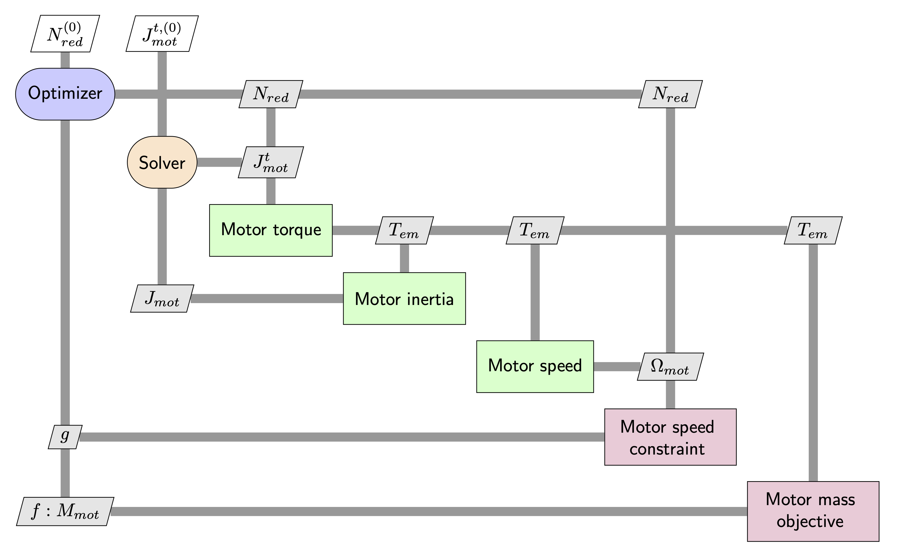

7.13. Sizing procedure and optimization with OpenMDAO (Student version)#
Written by Marc Budinger (INSA Toulouse) and Scott Delbecq (ISAE-SUPAERO), Toulouse, France
The objective of this notebook is to learn how to implement a sizing code and use a simple numerical optimization to find the optimal design of the system. The system studied is the TVC EMA of the VEGA launcher.
import numpy as np
import scipy.optimize
from scipy import log10
from math import pi
---------------------------------------------------------------------------
ImportError Traceback (most recent call last)
Cell In[1], line 3
1 import numpy as np
2 import scipy.optimize
----> 3 from scipy import log10
4 from math import pi
ImportError: cannot import name 'log10' from 'scipy' (/opt/hostedtoolcache/Python/3.9.25/x64/lib/python3.9/site-packages/scipy/__init__.py)
7.13.1. Objectives and specifications#
The objective is to select the reduction ratio of a gear reducer in order to minimize the mass of the motor.
The application have to ensure at nozzle level :
a max torque \(T_{load}\) of \(48 kNm\) and a max acceleration of \(\dot{\omega}_{max}=811 °/s²\)
a max speed \(\omega_{max}\) of 9.24 °/s
a max magnitude \(\alpha_{max}\) of 5.7 °
We will give here an example based on a linear actuator with a preselected roller screw (pitch of 10 mm/rev). We assume here, for simplification, the efficiency equal to 70%.
EMA components:

We first define the specifications and assumptions for the sizing:
# Specifications
angular_magnitude_max = 5.7 * pi / 180 # [rad]
max_dyn_torque = 48e3 # [N.m]
max_speed_rot = 9.24 * pi / 180 # [rad/s]
max_acc_rot = 811 * pi / 180 # [rad/s²]
# Assumptions
pitch = 10e-3 / 2 / pi # [m/rad]
nu_screw = 0.7 # [-]
# Security coefficient for mechanical components
k_sec = 2
---------------------------------------------------------------------------
NameError Traceback (most recent call last)
Cell In[2], line 2
1 # Specifications
----> 2 angular_magnitude_max = 5.7 * pi / 180 # [rad]
3 max_dyn_torque = 48e3 # [N.m]
4 max_speed_rot = 9.24 * pi / 180 # [rad/s]
NameError: name 'pi' is not defined
We then define the main characteristics for the components for the scaling laws:
# Motor
T_mot_guess_max_ref = 13.4 # [N.m]
W_mot_max_ref = 754 # [rad/s]
J_mot_ref = 2.9e-4 / 2 # [kg.m²]
M_mot_ref = 3.8 # [kg]
# Rod end
F_rod_max_ref = 183e3 # [N]
M_rod_ref = 1.55 # [kg]
L_rod_ref = 0.061 # [m]
# Screw
M_nut_ref = 2.1 # [kg]
Ml_screw_ref = 9.4 # [kg/m]
D_nut_ref = 0.08 # [m]
L_nut_ref = 0.12 * 0.08 / 0.09 # [m]
F_screw_max_ref = 135e3 # [N]
# Bearing
M_bearing_ref = 5.05 # [kg]
L_bearing_ref = 0.072 # [m]
F_bearing_max_ref = 475e3 # [N]
7.13.2. Sizing code#
The sizing code is defined here in a function which can give an evaluation of the objective and of the constraints function of design variables.
The design variables of this sizing code are :
the reduction ratio of the reducer
an oversizing coefficient for the selection of the motor used to tacke an algebraic loop
the positions (\(d_1\) and \(d_2\)) of the actuator anchorages
New design variables

The objective is the global mass of the actuator.
The constraints which should be positives are here:
the speed margin, ie. the motor doesn’t exceed its maximum speed
the torque margin, ie. the motor doesn’t exceed its maximum torque
the length margin, ie. the global length of the actuator doesn’t exceed the distance between anchorage points
import openmdao.api as om
class LeverArm(om.Group):
"""
Actuator model.
"""
def setup(self):
self.add_subsystem(
"lever_arm",
om.ExecComp(
"lever_arm = ((-(-0.9744 * d1 - 1.372) * (0.2248 * d1 - 0.3757) * ((0.2248 * d1 - 0.3757) ** 2 + (-0.9744 * d1 + d2 - 1.172) ** 2) ** (-0.5) + (0.2248 * d1 + 0.9823) * ((0.2248 * d1 - 0.3757) ** 2 + (-0.9744 * d1 + d2 - 1.172) ** 2) ** (-0.5)* (-0.9744 * d1 + d2 - 1.172))** 2) ** 0.5",
d1=0.0,
d2=0.0,
),
promotes=["*"],
)
class Actuator(om.Group):
"""
Actuator model.
"""
def setup(self):
self.add_subsystem(
"actuator_length",
om.ExecComp(
"actuator_length = ((0.2248 * d1 - 0.3757) ** 2 + (-0.9744 * d1 + d2 - 1.172) ** 2) ** 0.5",
d1=0.0,
d2=0.0,
),
promotes=["*"],
)
self.add_subsystem(
"stroke",
om.ExecComp(
"stroke = angular_magnitude_max * 2 * lever_arm",
angular_magnitude_max=angular_magnitude_max,
),
promotes=["*"],
)
class LoadSpeed(om.Group):
"""
Load and speed model.
"""
def setup(self):
self.add_subsystem(
"max_speed",
om.ExecComp("max_speed = max_speed_rot * lever_arm", max_speed_rot=max_speed_rot),
promotes=["*"],
)
self.add_subsystem(
"max_load",
om.ExecComp("max_load = max_dyn_torque / lever_arm", max_dyn_torque=max_dyn_torque),
promotes=["*"],
)
class Forces(om.Group):
"""
Stall and mechanical forces model.
"""
def setup(self):
self.add_subsystem(
"max_stall_force",
om.ExecComp("max_stall_force = T_mot_guess / pitch * reduction_ratio", pitch=pitch),
promotes=["*"],
)
self.add_subsystem(
"max_mech_force",
om.ExecComp("max_mech_force = k_sec * max_stall_force", k_sec=k_sec),
promotes=["*"],
)
class Motor(om.Group):
"""
Motor model.
"""
def setup(self):
self.add_subsystem(
"M_mot",
om.ExecComp(
"M_mot = M_mot_ref * (T_mot_guess / T_mot_guess_max_ref) ** (3 / 3.5)",
M_mot_ref=M_mot_ref,
T_mot_guess_max_ref=T_mot_guess_max_ref,
),
promotes=["*"],
)
self.add_subsystem(
"J_mot",
om.ExecComp(
"J_mot = J_mot_ref * (T_mot_guess / T_mot_guess_max_ref) ** (5 / 3.5)",
J_mot_ref=J_mot_ref,
T_mot_guess_max_ref=T_mot_guess_max_ref,
),
promotes=["*"],
)
self.add_subsystem(
"W_mot",
om.ExecComp(
"W_mot = W_mot_max_ref * (T_mot_guess / T_mot_guess_max_ref) ** (-1 / 3.5)",
W_mot_max_ref=W_mot_max_ref,
T_mot_guess_max_ref=T_mot_guess_max_ref,
),
promotes=["*"],
)
class RodEnd(om.Group):
"""
Rod end model.
"""
def setup(self):
self.add_subsystem(
"M_rod",
om.ExecComp(
"M_rod = M_rod_ref * (max_mech_force / F_rod_max_ref) ** (3 / 2)",
M_rod_ref=M_rod_ref,
F_rod_max_ref=F_rod_max_ref,
),
promotes=["*"],
)
self.add_subsystem(
"L_rod",
om.ExecComp(
"L_rod = L_rod_ref * (max_mech_force / F_rod_max_ref) ** (1 / 2)",
L_rod_ref=L_rod_ref,
F_rod_max_ref=F_rod_max_ref,
),
promotes=["*"],
)
class Nut(om.Group):
"""
Nut model.
"""
def setup(self):
self.add_subsystem(
"M_bearing",
om.ExecComp(
"M_bearing = M_bearing_ref * (max_mech_force / F_bearing_max_ref) ** (3 / 2)",
M_bearing_ref=M_bearing_ref,
F_bearing_max_ref=F_bearing_max_ref,
),
promotes=["*"],
)
self.add_subsystem(
"M_screw",
om.ExecComp(
"M_screw = Ml_screw_ref * (max_mech_force / F_screw_max_ref) ** (2 / 2) * actuator_length / 2",
Ml_screw_ref=Ml_screw_ref,
F_screw_max_ref=F_screw_max_ref,
),
promotes=["*"],
)
self.add_subsystem(
"D_nut",
om.ExecComp(
"D_nut = D_nut_ref * (max_mech_force / F_screw_max_ref) ** (1 / 2)",
D_nut_ref=D_nut_ref,
F_screw_max_ref=F_screw_max_ref,
),
promotes=["*"],
)
self.add_subsystem(
"L_nut",
om.ExecComp(
"L_nut = L_nut_ref * (max_mech_force / F_screw_max_ref) ** (1 / 2)",
L_nut_ref=L_nut_ref,
F_screw_max_ref=F_screw_max_ref,
),
promotes=["*"],
)
class Bearing(om.Group):
"""
Bearing model.
"""
def setup(self):
self.add_subsystem(
"M_nut",
om.ExecComp(
"M_nut = M_nut_ref * (max_mech_force / F_screw_max_ref) ** (3 / 2)",
M_nut_ref=M_nut_ref,
F_screw_max_ref=F_screw_max_ref,
),
promotes=["*"],
)
self.add_subsystem(
"L_bearing",
om.ExecComp(
"L_bearing = L_bearing_ref * (max_mech_force / F_bearing_max_ref) ** (1 / 2)",
L_bearing_ref=L_bearing_ref,
F_bearing_max_ref=F_bearing_max_ref,
),
promotes=["*"],
)
class MotorTorqueReal(om.Group):
"""
Real motor torque model.
"""
def setup(self):
self.add_subsystem(
"T_mot_real",
om.ExecComp(
"T_mot_real = max_load * pitch / reduction_ratio / nu_screw + J_mot * max_acc_rot * lever_arm * reduction_ratio / pitch",
pitch=pitch,
nu_screw=nu_screw,
),
promotes=["*"],
)
7.13.3. Optimization with SLSQP algorithm#
We will now use the opmization algorithms of the Scipy package to solve and optimize the configuration. We will first use the SLSQP algorithm without explicit expression of the gradient (Jacobian).
The first step is to give an initial value of optimisation variables:
# Optimization variables
# Reduction ratio
reduction_ratio_init = 1 # [-]
reduction_ratio_min = 0.1 # [-]
reduction_ratio_max = 10 # [-]
# Oversizing coefficient for multidisciplinary coupling
k_oversizing_init = 1 # [-]
k_oversizing_min = 0.2 # [-]
k_oversizing_max = 5 # [-]
# Anchorage positions
d1_init = 0 # [m]
d1_min = -80 / 100 # [m]
d1_max = 80 / 100 # [m]
d2_init = 0 # [m]
d2_min = -20 / 100 # [m]
d2_max = 20 / 100 # [m]
# Initial values vector for design variables
parameters = np.array((reduction_ratio_init, k_oversizing_init, d1_init, d2_init))
7.13.3.1. MDF formulation#

class MotorTorque(om.Group):
"""
Real motor torque model.
"""
def setup(self):
self.add_subsystem(
"T_mot_guess",
om.ExecComp(
"T_mot_guess = max_load * pitch / reduction_ratio / nu_screw + J_mot * max_acc_rot * lever_arm * reduction_ratio / pitch",
pitch=pitch,
nu_screw=nu_screw,
),
promotes=["*"],
)
class ObjectiveConstraints(om.Group):
"""
Objective and constraints model.
"""
def setup(self):
self.add_subsystem(
"objective",
om.ExecComp("objective = M_mot + M_bearing + 2 * M_rod + M_screw + M_nut"),
promotes=["*"],
)
self.add_subsystem(
"C1",
om.ExecComp("C1 = W_mot - reduction_ratio * max_speed / pitch", pitch=pitch),
promotes=["*"],
)
self.add_subsystem(
"C3",
om.ExecComp("C3 = actuator_length - stroke - L_nut - L_bearing - 2 * L_rod"),
promotes=["*"],
)
class SystemMDF(om.Group):
"""
Overall system model with MDF formulation
"""
def setup(self):
self.add_subsystem("lever_arm", LeverArm(), promotes=["*"])
self.add_subsystem("actuator", Actuator(), promotes=["*"])
self.add_subsystem("load_speed", LoadSpeed(), promotes=["*"])
# We have to do something here regarding the cycle
cycle = self.add_subsystem("cycle", om.Group(), promotes=["*"])
cycle.add_subsystem("motor_torque", MotorTorque(), promotes=["*"])
cycle.add_subsystem("forces", Forces(), promotes=["*"])
cycle.add_subsystem("motor", Motor(), promotes=["*"])
# We had a solver
cycle.nonlinear_solver = om.NonlinearBlockGS(maxiter=100)
self.add_subsystem("rod_end", RodEnd(), promotes=["*"])
self.add_subsystem("nut", Nut(), promotes=["*"])
self.add_subsystem("bearing", Bearing(), promotes=["*"])
self.add_subsystem("motor_torque_real", MotorTorqueReal(), promotes=["*"])
self.add_subsystem("objective_constraints", ObjectiveConstraints(), promotes=["*"])
import openmdao.api as om
import time
prob = om.Problem()
prob.model = SystemMDF()
prob.driver = om.ScipyOptimizeDriver()
prob.driver.options["optimizer"] = "SLSQP"
# prob.driver.options['maxiter'] = 100
prob.driver.options["tol"] = 1e-8
prob.model.add_design_var("reduction_ratio", lower=reduction_ratio_min, upper=reduction_ratio_max)
prob.model.add_design_var("d1", lower=d1_min, upper=d1_max)
prob.model.add_design_var("d2", lower=d2_min, upper=d2_max)
prob.model.add_objective("objective")
prob.model.add_constraint("C1", lower=0)
prob.model.add_constraint("C3", lower=0)
# Ask OpenMDAO to finite-difference across the model to compute the gradients for the optimizer
prob.model.approx_totals()
prob.setup()
prob.set_solver_print(level=1)
# Initialization of design variables
prob.set_val("reduction_ratio", reduction_ratio_init)
prob.set_val("d1", d1_init)
prob.set_val("d2", d2_init)
start = time.time()
prob.run_driver()
end = time.time()
---------------------------------------------------------------------------
NameError Traceback (most recent call last)
Cell In[18], line 23
20 # Ask OpenMDAO to finite-difference across the model to compute the gradients for the optimizer
21 prob.model.approx_totals()
---> 23 prob.setup()
24 prob.set_solver_print(level=1)
26 # Initialization of design variables
File /opt/hostedtoolcache/Python/3.9.25/x64/lib/python3.9/site-packages/openmdao/core/problem.py:1055, in Problem.setup(self, check, logger, mode, force_alloc_complex, distributed_vector_class, local_vector_class, derivatives, parent)
1052 self._metadata['reports_dir'] = self.get_reports_dir(force=False)
1054 try:
-> 1055 model._setup(model_comm, self._metadata)
1056 finally:
1057 # whenever we're outside of model._setup, static mode should be True so that anything
1058 # added outside of _setup will persist.
1059 self._metadata['static_mode'] = True
File /opt/hostedtoolcache/Python/3.9.25/x64/lib/python3.9/site-packages/openmdao/core/group.py:748, in Group._setup(self, comm, prob_meta)
745 self._post_components = None
747 # Besides setting up the processors, this method also builds the model hierarchy.
--> 748 self._setup_procs(self.pathname, comm, self._problem_meta)
750 prob_meta['config_info'] = _ConfigInfo()
752 try:
753 # Recurse model from the bottom to the top for configuring.
File /opt/hostedtoolcache/Python/3.9.25/x64/lib/python3.9/site-packages/openmdao/core/group.py:652, in Group._setup_procs(self, pathname, comm, prob_meta)
650 # Perform recursion
651 for subsys in self._subsystems_myproc:
--> 652 subsys._setup_procs(subsys.pathname, sub_comm, prob_meta)
654 # build a list of local subgroups to speed up later loops
655 self._subgroups_myproc = [s for s in self._subsystems_myproc if isinstance(s, Group)]
File /opt/hostedtoolcache/Python/3.9.25/x64/lib/python3.9/site-packages/openmdao/core/group.py:597, in Group._setup_procs(self, pathname, comm, prob_meta)
594 self._group_inputs[n] = lst.copy()
596 # Call setup function for this group.
--> 597 self.setup()
598 self._setup_check()
600 # need to save these because _setup_var_data can be called multiple times
601 # during the config process and we don't want to wipe out any group_inputs
602 # that were added during self.setup()
Cell In[6], line 22, in Actuator.setup(self)
6 def setup(self):
8 self.add_subsystem(
9 "actuator_length",
10 om.ExecComp(
(...)
15 promotes=["*"],
16 )
18 self.add_subsystem(
19 "stroke",
20 om.ExecComp(
21 "stroke = angular_magnitude_max * 2 * lever_arm",
---> 22 angular_magnitude_max=angular_magnitude_max,
23 ),
24 promotes=["*"],
25 )
NameError: name 'angular_magnitude_max' is not defined
print("Objective:")
print(" Total mass = %.2f kg" % (prob.get_val("objective")))
print("Design variables:")
print(" reduction_ratio = %.2f" % prob.get_val("reduction_ratio"))
print(" d_1 = %.2f m" % prob.get_val("d1"))
print(" d_2 = %.2f m" % prob.get_val("d2"))
print("Performances:")
print(" Stroke = %.2f m" % prob.get_val("stroke"))
print(" Max load = %.0f N" % prob.get_val("max_load"))
print(" Stall load = %.0f N" % prob.get_val("max_stall_force"))
print("Components characteristics:")
print(" Lever arm = %.2f m" % prob.get_val("lever_arm"))
print(" Actuator length = %.2f m" % prob.get_val("actuator_length"))
print(" Motor mass = %.2f kg" % prob.get_val("M_mot"))
print(" Max Tem = %.2f N.m" % prob.get_val("T_mot_real"))
print(" Rod-end mass = %.2f kg" % (2 * prob.get_val("M_rod")))
print(" Rod-end length = %.2f m" % prob.get_val("L_rod"))
print(" Screw mass = %.2f kg" % prob.get_val("M_screw"))
print(" Nut mass = %.2f kg" % (2 * prob.get_val("M_nut")))
print(" Nut length = %.2f m" % prob.get_val("L_nut"))
print(" Bearing length = %.2f m" % prob.get_val("L_bearing"))
print("Constraints (should be >= 0):")
print(" Speed margin: W_mot-reduction_ratio*max_speed/pitch= %.3f" % prob.get_val("C1"))
print(
" Length margin: actuator_length-stroke-L_nut-L_bearing-2*L_rod = %.3f"
% prob.get_val("C3")
)
print("Calculation time:\n", end - start, "s")
Objective:
---------------------------------------------------------------------------
TypeError Traceback (most recent call last)
Cell In[19], line 2
1 print("Objective:")
----> 2 print(" Total mass = %.2f kg" % (prob.get_val("objective")))
3 print("Design variables:")
4 print(" reduction_ratio = %.2f" % prob.get_val("reduction_ratio"))
File /opt/hostedtoolcache/Python/3.9.25/x64/lib/python3.9/site-packages/openmdao/core/problem.py:553, in Problem.get_val(self, name, units, indices, get_remote)
551 raise KeyError(f'{self.model.msginfo}: Variable "{name}" not found.')
552 else:
--> 553 val = self.model.get_val(name, units=units, indices=indices, get_remote=get_remote,
554 from_src=True)
556 if val is _UNDEFINED:
557 if get_remote:
File /opt/hostedtoolcache/Python/3.9.25/x64/lib/python3.9/site-packages/openmdao/core/system.py:5332, in System.get_val(self, name, units, indices, get_remote, rank, vec_name, kind, flat, from_src)
5293 def get_val(self, name, units=None, indices=None, get_remote=False, rank=None,
5294 vec_name='nonlinear', kind=None, flat=False, from_src=True):
5295 """
5296 Get an output/input/residual variable.
5297
(...)
5330 The value of the requested output/input variable.
5331 """
-> 5332 abs_names = name2abs_names(self, name)
5333 if not abs_names:
5334 raise KeyError('{}: Variable "{}" not found.'.format(self.msginfo, name))
File /opt/hostedtoolcache/Python/3.9.25/x64/lib/python3.9/site-packages/openmdao/utils/name_maps.py:181, in name2abs_names(system, name)
163 """
164 Map the given promoted, relative, or absolute name to any matching absolute names.
165
(...)
178 Tuple or list of absolute variable names found.
179 """
180 # first check relative promoted names
--> 181 if name in system._var_allprocs_prom2abs_list['output']:
182 return system._var_allprocs_prom2abs_list['output'][name]
184 if name in system._var_allprocs_prom2abs_list['input']:
TypeError: 'NoneType' object is not subscriptable
om.n2(prob)
---------------------------------------------------------------------------
AttributeError Traceback (most recent call last)
Cell In[20], line 1
----> 1 om.n2(prob)
File /opt/hostedtoolcache/Python/3.9.25/x64/lib/python3.9/site-packages/openmdao/visualization/n2_viewer/n2_viewer.py:582, in n2(data_source, outfile, path, values, case_id, show_browser, embeddable, title, display_in_notebook)
580 # grab the model viewer data
581 try:
--> 582 model_data = _get_viewer_data(data_source, values=values, case_id=case_id)
583 err_msg = ''
584 except TypeError as err:
File /opt/hostedtoolcache/Python/3.9.25/x64/lib/python3.9/site-packages/openmdao/visualization/n2_viewer/n2_viewer.py:455, in _get_viewer_data(data_source, values, case_id)
451 raise TypeError(f"Viewer data is not available for '{data_source}'."
452 "The source must be a Problem, model or the filename of a recording.")
454 data_dict = {}
--> 455 data_dict['tree'] = _get_tree_dict(root_group, values=values)
456 data_dict['md5_hash'] = root_group._generate_md5_hash()
458 connections_list = []
File /opt/hostedtoolcache/Python/3.9.25/x64/lib/python3.9/site-packages/openmdao/visualization/n2_viewer/n2_viewer.py:197, in _get_tree_dict(system, values, is_parallel)
194 tree_dict['subsystem_type'] = 'group'
195 tree_dict['is_parallel'] = is_parallel
--> 197 children = [_get_tree_dict(s, values, is_parallel)
198 for s in system._subsystems_myproc]
200 if system.comm.size > 1:
201 if system._subsystems_myproc:
File /opt/hostedtoolcache/Python/3.9.25/x64/lib/python3.9/site-packages/openmdao/visualization/n2_viewer/n2_viewer.py:197, in <listcomp>(.0)
194 tree_dict['subsystem_type'] = 'group'
195 tree_dict['is_parallel'] = is_parallel
--> 197 children = [_get_tree_dict(s, values, is_parallel)
198 for s in system._subsystems_myproc]
200 if system.comm.size > 1:
201 if system._subsystems_myproc:
File /opt/hostedtoolcache/Python/3.9.25/x64/lib/python3.9/site-packages/openmdao/visualization/n2_viewer/n2_viewer.py:200, in _get_tree_dict(system, values, is_parallel)
195 tree_dict['is_parallel'] = is_parallel
197 children = [_get_tree_dict(s, values, is_parallel)
198 for s in system._subsystems_myproc]
--> 200 if system.comm.size > 1:
201 if system._subsystems_myproc:
202 sub_comm = system._subsystems_myproc[0].comm
AttributeError: 'NoneType' object has no attribute 'size'
7.13.3.2. NVH formulation#
You now have to implement the NVH formulation based on the previous lab.
class MotorTorqueGuess(om.Group):
"""
Guess of motor torque model.
"""
def setup(self):
Cell In[21], line 7
^
IndentationError: expected an indented block
class ObjectiveConstraints(om.Group):
"""
Objective and constraints model.
"""
def setup(self):
self.add_subsystem(
"objective",
om.ExecComp("objective = M_mot + M_bearing + 2 * M_rod + M_screw + M_nut"),
promotes=["*"],
)
self.add_subsystem(
"C1",
om.ExecComp("C1 = W_mot - reduction_ratio * max_speed / pitch", pitch=pitch),
promotes=["*"],
)
self.add_subsystem(
"C3",
om.ExecComp("C3 = actuator_length - stroke - L_nut - L_bearing - 2 * L_rod"),
promotes=["*"],
)
class SystemNVH(om.Group):
"""
Overall system model with NVH formulation
"""
def setup(self):
Cell In[23], line 6
def setup(self):
^
IndentationError: expected an indented block
import openmdao.api as om
import time
prob = om.Problem()
prob.model = SystemNVH()
prob.driver = om.ScipyOptimizeDriver()
prob.driver.options["optimizer"] = "SLSQP"
# prob.driver.options['maxiter'] = 100
prob.driver.options["tol"] = 1e-8
prob.model.add_design_var("reduction_ratio", lower=reduction_ratio_min, upper=reduction_ratio_max)
prob.model.add_design_var()
prob.model.add_design_var("d1", lower=d1_min, upper=d1_max)
prob.model.add_design_var("d2", lower=d2_min, upper=d2_max)
prob.model.add_objective("objective")
prob.model.add_constraint("C1", lower=0)
prob.model.add_constraint()
prob.model.add_constraint("C3", lower=0)
# Ask OpenMDAO to finite-difference across the model to compute the gradients for the optimizer
prob.model.approx_totals()
prob.setup()
prob.set_solver_print(level=0)
# Initialization of design variables
prob.set_val("reduction_ratio", reduction_ratio_init)
prob.set_val("k_oversizing", k_oversizing_init)
prob.set_val("d1", d1_init)
prob.set_val("d2", d2_init)
start = time.time()
prob.run_driver()
end = time.time()
---------------------------------------------------------------------------
NameError Traceback (most recent call last)
Cell In[24], line 5
2 import time
4 prob = om.Problem()
----> 5 prob.model = SystemNVH()
7 prob.driver = om.ScipyOptimizeDriver()
8 prob.driver.options["optimizer"] = "SLSQP"
NameError: name 'SystemNVH' is not defined
We can print of the characterisitcs of the problem before optimization with the intitial vector of optimization variables:
print("Objective:")
print(" Total mass = %.2f kg" % (prob.get_val("objective")))
print("Design variables:")
print(" reduction_ratio = %.2f" % prob.get_val("reduction_ratio"))
print(" k_oversizing = %.2f" % prob.get_val("k_oversizing"))
print(" d_1 = %.2f m" % prob.get_val("d1"))
print(" d_2 = %.2f m" % prob.get_val("d2"))
print("Performances:")
print(" Stroke = %.2f m" % prob.get_val("stroke"))
print(" Max load = %.0f N" % prob.get_val("max_load"))
print(" Stall load = %.0f N" % prob.get_val("max_stall_force"))
print("Components characteristics:")
print(" Lever arm = %.2f m" % prob.get_val("lever_arm"))
print(" Actuator length = %.2f m" % prob.get_val("actuator_length"))
print(" Motor mass = %.2f kg" % prob.get_val("M_mot"))
print(" Max Tem = %.2f N.m" % prob.get_val("T_mot_real"))
print(" Rod-end mass = %.2f kg" % (2 * prob.get_val("M_rod")))
print(" Rod-end length = %.2f m" % prob.get_val("L_rod"))
print(" Screw mass = %.2f kg" % prob.get_val("M_screw"))
print(" Nut mass = %.2f kg" % (2 * prob.get_val("M_nut")))
print(" Nut length = %.2f m" % prob.get_val("L_nut"))
print(" Bearing length = %.2f m" % prob.get_val("L_bearing"))
print("Constraints (should be >= 0):")
print(" Speed margin: W_mot-reduction_ratio*max_speed/pitch= %.3f" % prob.get_val("C1"))
print(" Torque margin: T_mot_guess-T_mot_real= %.3f " % prob.get_val("C2"))
print(
" Length margin: actuator_length-stroke-L_nut-L_bearing-2*L_rod = %.3f"
% prob.get_val("C3")
)
print("Calculation time:\n", end - start, "s")
Objective:
---------------------------------------------------------------------------
TypeError Traceback (most recent call last)
Cell In[25], line 2
1 print("Objective:")
----> 2 print(" Total mass = %.2f kg" % (prob.get_val("objective")))
3 print("Design variables:")
4 print(" reduction_ratio = %.2f" % prob.get_val("reduction_ratio"))
File /opt/hostedtoolcache/Python/3.9.25/x64/lib/python3.9/site-packages/openmdao/core/problem.py:553, in Problem.get_val(self, name, units, indices, get_remote)
551 raise KeyError(f'{self.model.msginfo}: Variable "{name}" not found.')
552 else:
--> 553 val = self.model.get_val(name, units=units, indices=indices, get_remote=get_remote,
554 from_src=True)
556 if val is _UNDEFINED:
557 if get_remote:
File /opt/hostedtoolcache/Python/3.9.25/x64/lib/python3.9/site-packages/openmdao/core/system.py:5332, in System.get_val(self, name, units, indices, get_remote, rank, vec_name, kind, flat, from_src)
5293 def get_val(self, name, units=None, indices=None, get_remote=False, rank=None,
5294 vec_name='nonlinear', kind=None, flat=False, from_src=True):
5295 """
5296 Get an output/input/residual variable.
5297
(...)
5330 The value of the requested output/input variable.
5331 """
-> 5332 abs_names = name2abs_names(self, name)
5333 if not abs_names:
5334 raise KeyError('{}: Variable "{}" not found.'.format(self.msginfo, name))
File /opt/hostedtoolcache/Python/3.9.25/x64/lib/python3.9/site-packages/openmdao/utils/name_maps.py:181, in name2abs_names(system, name)
163 """
164 Map the given promoted, relative, or absolute name to any matching absolute names.
165
(...)
178 Tuple or list of absolute variable names found.
179 """
180 # first check relative promoted names
--> 181 if name in system._var_allprocs_prom2abs_list['output']:
182 return system._var_allprocs_prom2abs_list['output'][name]
184 if name in system._var_allprocs_prom2abs_list['input']:
TypeError: 'NoneType' object is not subscriptable
om.n2(prob)
---------------------------------------------------------------------------
AttributeError Traceback (most recent call last)
Cell In[26], line 1
----> 1 om.n2(prob)
File /opt/hostedtoolcache/Python/3.9.25/x64/lib/python3.9/site-packages/openmdao/visualization/n2_viewer/n2_viewer.py:582, in n2(data_source, outfile, path, values, case_id, show_browser, embeddable, title, display_in_notebook)
580 # grab the model viewer data
581 try:
--> 582 model_data = _get_viewer_data(data_source, values=values, case_id=case_id)
583 err_msg = ''
584 except TypeError as err:
File /opt/hostedtoolcache/Python/3.9.25/x64/lib/python3.9/site-packages/openmdao/visualization/n2_viewer/n2_viewer.py:455, in _get_viewer_data(data_source, values, case_id)
451 raise TypeError(f"Viewer data is not available for '{data_source}'."
452 "The source must be a Problem, model or the filename of a recording.")
454 data_dict = {}
--> 455 data_dict['tree'] = _get_tree_dict(root_group, values=values)
456 data_dict['md5_hash'] = root_group._generate_md5_hash()
458 connections_list = []
File /opt/hostedtoolcache/Python/3.9.25/x64/lib/python3.9/site-packages/openmdao/visualization/n2_viewer/n2_viewer.py:200, in _get_tree_dict(system, values, is_parallel)
195 tree_dict['is_parallel'] = is_parallel
197 children = [_get_tree_dict(s, values, is_parallel)
198 for s in system._subsystems_myproc]
--> 200 if system.comm.size > 1:
201 if system._subsystems_myproc:
202 sub_comm = system._subsystems_myproc[0].comm
AttributeError: 'NoneType' object has no attribute 'size'